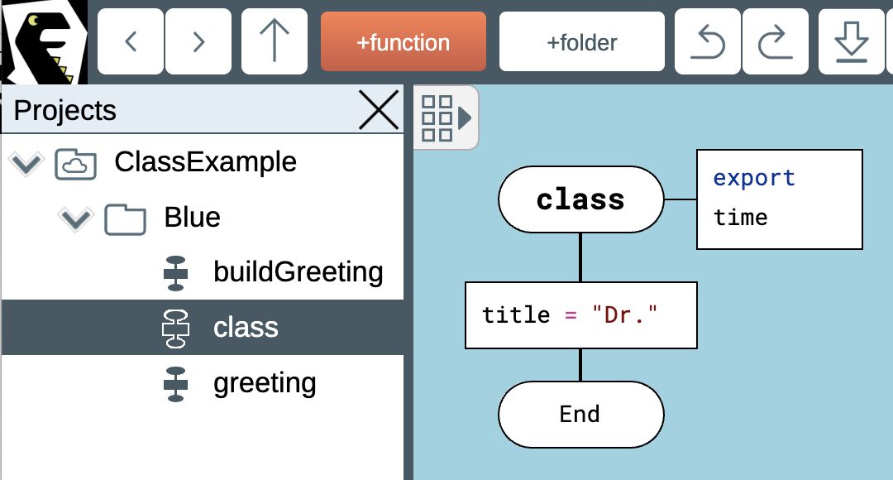
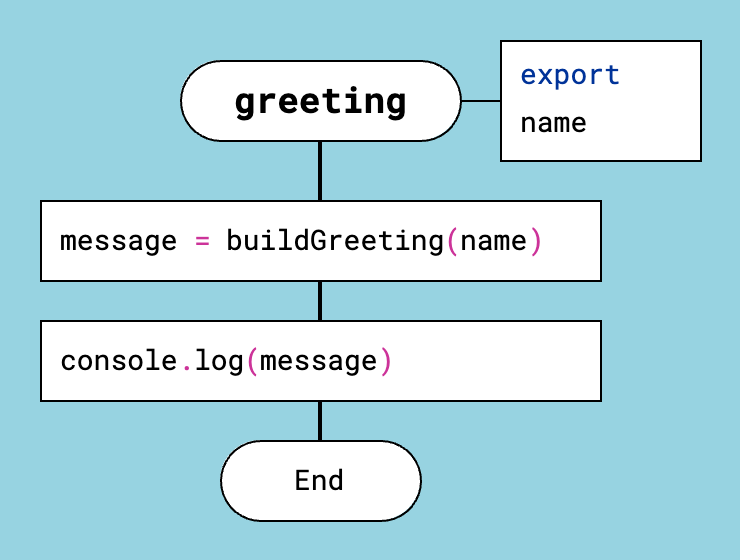

Объектно-ориентированное программирование на JavaScript и Lua
Хотя некоторые считают Lua экзотическим языком, JavaScript и Lua — это одна и та же технология. Если убрать из этих языков весь мусор, останется одно и то же превосходное ядро.
В JavaScript следует избегать объекта prototype и ключевых слов class и this. В Lua нужно держаться подальше от манипуляций с metatable.
Таким образом JavaScript и Lua превращаются в единый минималистичный язык с поддержкой объектно-ориентированного программирования.
DrakonTech работает с классами так.
DrakonTech генерирует фабричную функцию, которая создаёт новый объект с именем self. В этот объект генератор кода помещает публичные методы. Все приватные методы остаются внутри фабричной функции. Приватные методы нельзя вызвать напрямую извне.
Параметры фабричной функции становятся параметрами конструктора. Локальные переменные фабричной функции становятся приватными полями класса.
Методы объекта могут напрямую записывать данные в свойства объекта self, если разработчик решит это делать. Таким образом, разработчик может хранить состояние приватно или намеренно открывать его через self.
Вот как выглядит сгенерированный код класса на JavaScript:
function Blue(time) { var self = { _type: 'Blue' }; var title; title = 'Dr.'; function buildGreeting(name) { return `Good ${ time }, ${ title } ${ name }!`; } function greeting(name) { var message; message = buildGreeting(name); console.log(message); } self.greeting = greeting; return self; } module.exports = { Blue };
А вот эквивалент на Lua:
function Blue(time) local self = {_type="Blue"} local title title = "Dr." function buildGreeting(name) return "Good " .. time .. ", " .. title .. " " .. name .. "!" end function greeting(name) local message message = buildGreeting(name) print(message) end self.greeting = greeting return self end return { Blue = Blue }
А вот как использовать этот класс в обоих языках:
blueObj = Blue("Morning") blueObj.greeting("Luna")
Обратите внимание, что в Lua для вызова метода не используется синтаксис с двоеточием, например object:method(). Вместо этого применяется оператор точки, как и в JavaScript: object.method().
Чтобы создать класс в проекте JavaScript или Lua в DrakonTech:
- Создайте новую папку.
- Создайте в этой папке функцию с именем class. Функция class сообщает генератору кода, что нужно построить класс. Аргументы функции class становятся аргументами конструктора. Все переменные, объявленные в функции class, становятся приватными полями класса.
- Добавьте функции в папку. Все функции внутри этой папки и её подпапок становятся методами класса.
- Чтобы сделать метод публичным, пометьте его как экспортируемый.
Имя папки, содержащей функцию class, становится именем класса.

Функция class (конструктор класса) в JavaScript и Lua
Аргументы и локальные переменные функции class доступны всем методам класса.

Публичный метод
Объект self доступен как методам, так и функции class.
Если функция class помечена как экспортируемая, экспортируется фабричная функция класса. Тогда класс можно использовать за пределами модуля.
Обратите внимание, что в DrakonTech вам не нужно явно объявлять переменные в Lua и JavaScript. Они объявляются автоматически.